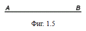

Беседа 2730 от 3877 · Беинса Дуно
Приближаване и отдалечаване
Отче наш.
Имате ли тема? – /Имаме./ – Четете. /Чете се темата „Най-малкото, което спъва“/
Разглеждайте въпроса физически, вие го разглеждате много отвлечено. Какво разбирате под думата „малко“, конкретно какво се разбира под думата „малко“? „Малко“ и „голямо“ си противопоставят. Какво разбирате под „малко“ и „голямо“. Какво разбирате под думата „страх“ и „смелост“? Смелостта по какво се отличава? Или вземете човек, който иска да се докара, иска да се облече хубаво, а друг ходи скромно, и по какво се отличават един от друг? По какво се отличава топлината от студа? Телата, които са топли и които са студени, по какво се отличават? Има съществени качества. При кои работи, при кои неща човек може да бъде щастлив? При малките или при големите? Ако исkaте да прекарате една река през вашия двор, голяма река ли ще прекарате или малка? Ако искате да плавате, в малката ли река ще плавате или в голямата? Запример, вземете птичките, които хвъркат. Вие имате едно понятие, казвате: „Колко са блажени тия птички, хвъркат нагоре, надолу, разхождат се“. Всъщност птичката колко е блажена? – Целия ден търси храната си. Където и да кацне се мисли за яденето. Птиците мислят само за яденето. Когато остане празна, няма за какво да мисли, започва да се пощи, глади си перцата, прави си тоалета. Значи, тогава ще познаете, че се е наяла. Щом седи и внимава, тя мисли само за яденето. Питам тогава: Кое е онова, което заставя птиците целия ден да хвъркат? Да допуснем, че вие някой път сте недоволни и не знаете от какво зависи вашето недоволство. Някой път вашето недоволство зависи от глада, понеже сте били гладни. След като сте яли, недоволни сте от яденето, яли сте лошо ядене и целия ден имате лошо разположение. Някой път като сте се наяли добре, имате добро разположение. Запример, вземете, някои деца обичат да седят в къщи, други пък не се свъртат. На какво ще го отдадете. Има деца, които в къщи не може да ги задържиш, се навън искат да ходят. Пък други, цял ден седят в къщи. Някои хора много обичат дома, домът е като положка, целия ден седят като птичка в положката. Квачката като се разклочи, тя седи на гнездото, дали има яйца или не, не гледа, мисли че мъти нещо. Та и човек понякой път мяза на такава квачка, седи някъде, мисли, че има някаква идея. Пък той я няма. Или понякой път вие казвате: „Аз не съм разположен“. Какво разбирате под думите „разположен“ и „неразположен“. А пък те са граници. Значи малко разположение и много разположение. Кое е по-хубаво? Някой път малкото е по-хубаво, кога? – Малкото неразположение е за предпочитане пред голямото неразположение. А пък голямото доволство е за предпочитане пред малкото доволство. Какво разбирате когато някой път казвате „малки добродетели“ и „големи добродетели“. Малките добродетели са семенца. А пък големите дървета са семенца посети, които са изникнали. Винаги малкото става голямо. Но нали сега във вашата математика казват, че от единицата по-голямо няма. Ние казваме, че от единицата по-голямо няма. Но в живота се опровергава. Един грош и един грош, два гроша. Кое предпочитате един грош или два гроша, между единият грош и двата гроша, кое е за предпочитане? Между два гроша и три гроша, кое е за предпочитане? Значи, две е за предпочитане пред едно; три е за предпочитане пред две; четири е за предпочитане пред три; пет е за предпочитане пред четири и т.н. Запример, вземете един съвременен музикант пианист. Ако пръстите са му много къси, ако първият пръст е 5 сантиметра, третият – 5 сантиметра, малкият пръст 2 сантиметра, може ли да бъде добър музикант? Един има хубави пръсти, първият пръст 12 сантиметра, средният – 14 сантиметра, четвъртият има 13 сантиметра, малкото кутре е 9 сантиметра. С тези пръсти ще може много по-добре да свири. Но, представете си сега, че първият пръст е 1 метър, вторият пръст е един метър и половина, третият, безименният пръст е 1 метър, 75 сантиметра е малкото кутре. Какво ще правиш с тия пръсти? Най-хубавото е човек да бъде господар. Човек трябва да има определени пръсти, но като стане сутринта да може да ги продължи, или да ги скъси. Ако е за дълги, дълги да ги направи, ако е за къси, къси да ги направи. Ако имаш такава ръка ще се справиш по-лесно. Казва някой, че той като Настрадин Ходжа си направил една пещ и дошли другите, започнали да ги критикуват. Казват: „На криво си си турил вратата, не трябваше да я туриш на юг, ами към север“. Друг казва: „Не, към изток трябваше да се тури“. Той взел, че направил пещта на две колела и на всеки, който дойде да си дава мнението казвал: „Ти накъде искаш да бъде вратата на пещта?“ Навсякъде обръщал вратата и разрешил въпроса. Кой как дойде казва: „Не си обърнал правилно вратата на пещта“. Казва: „Ти накъде искаш?“ Обръща я на тази страна, на която той иска. Когато искате да угодите на хората, трябва да имате една пещ на две колелета, другояче не е икономично. Ако за всеки едного градите по една пещ не е икономично. Или може и по друг начин да разрешите въпроса. Един като го критикували, той си направил една пещ, на която вратата била обърната към изток, друга пещ с врата обърната на запад, трета – на север, четвърта – на юг. Така ги наредил. Иде един и казва, че вратата на пещта не е обърната както трябва. Пита го на коя страна иска да бъде обърната вратата на пещта и го завежда при тая пещ. Който дойде, накъдето иска да бъде обърната вратата на пещта, при тази пещ го завежда. Дойде някой, каже: „Ти не си направил пещта както трябва“. Казва: „Тази пещ не е за тебе и го завежда при неговата пещ“. Казва: „Аз имах предвид вашето мнение и затова направих такава пещ“. Казва: „Тази пещ е отлична“. Дойде друг и каже: „Що не обърнеш пещта на другата страна?“ Казва: „И такава пещ имам“, завежда го при тая пещ. Та трябва да имате най-малко четири пещи, за да угодите на хората. Четири точки има. Сега, в коя пещ се опича хлябът най-хубаво? В тая, вратата на която е на север или на юг. В коя пещ се опича хлябът по-хубаво? Фурнаджиите накъде турят обикновено? Повечето е обърната към юг. Вратите на пещите турят към южното полушарие. Изобщо де си турят изходните врата на домовете? Някои са на изток, но повечето са откъм юг, понеже оттам грее слънцето. Входната врата е откъм юг. Сега вие се смеете на Настрадин Ходжа. Казвам: Къде е тази пещ с двете колела? Ами човек я направил на две колелета. Устата на пещта това е входната врата. Долу в неговата утроба се пекат всичките баници, всичко тук долу се пече. Той току се обърне на една и на друга страна. Той навсякъде се обръща не само на четири страни. Ти накъдето искаш може да се обърне и на север, и на юг, навсякъде се обръща. Туй показва, че човек е много умен.
Но всяко учение има практическо приложение. Кое наричаме практическо приложение? Думата „практика“, какво означава? Тя не е българска дума. Някой от вас знае ли гръцки? Някой път казват: „Той е практичен човек“. Често човек в своя живот мяза на една дресирана котка. Има много навици в човека, които го спъват в неговия живот. Всичките противоречия произтичат, че ние не сме господари на всичките положения, при които изпадаме. Един се хвалил със своята котка, че е много възпитана. Възпитал я да носи една табла с кафе, върви на два крака, носи таблата. На гостите поднася тази котка кафето. Казват му: „Котка е, колкото и да носи кафе, котка си е“. Много е възпитана. Отива един ден на гости, котката носи таблата, той носил със себе си една мишка, и като я пуснал, котката пуснала таблата и започнала да гони мишката. Старите навици, да гони мишката, излизат. Вие сега може да се смеете. Но колко пъти вие пускате таблата? Вие имате някое малко желание, носите кафето с таблата, излезе мишката и вие пуската таблата, разлеете кафето, да гоните мишката, да реализирате вашето желание. Някой път някой ви каже: „Колко сте невежа“. Вие като ви каже невежа, веднага целият ден сте неразположен. Казвате: „Аз да съм невежа“. Какво разбирате? Или някой ви каже: „Ти си много прост“. Но, ако ти си много музикален, имаш едно крайно музикално ухо, като ти каже „Ти си много прост“, този дума не е музикална, за туй звучи грубо. После казва: „Ти си невежа“. И тя е немузикална. Или ти каже „Лош си“. И тя не е музикална. „Ти си скръжав“, не е музикална. Има думи, които не са музикални. Следователно, ако ти си глух и ти каже, ти си прост, ти като не чуваш, не разбираш. Всичките думи, които не са музикални, са неприятни. Има думи, които не са музикални. Произношението не е музикално. Да кажем, един човек може да се обиди. Ти кажеш „Овца“. Той казва „Овца“ – обижда се. Но ако му кажеш „агънце“, не се обижда. Агънцето ми, пиленцето ми, ако кажеш не се обижда. Но ако кажеш „кокошка“, той ще се обиди. Ако една дума е музикална тя не обижда човека. Думата „кокошка“ не е музикална. Много неправилен тон е. Думата „грубиянин“ не е музикална дума.
Та, мисъл, правилна мисъл трябва да се внесе. Туй, което ни причинява неприятност, то са трептенията. Този усет, който имате, всякога ни показва, какви са трептенията на една дума. Зависи от трептенията една дума да ни бъде приятна или неприятна. Във всичките езици, някои думи са приятни, някои неприятни; някои думи са музикални, някои не са музикални. Музикални думи са ония, които имат съдържание. Езиците на източните народи се отличават, че техния език е пълен с порнографични думи, с немузикални думи са пълни. За езиците на западните народи, в английски най-лошата дума, която може да ти каже е „Иди в ада“. Ако дойдеш тук на изток, ще намериш такъв богат речник, колкото искаш думи. Но и те имат такива прозвища, думи, които имат лошо значение. И там имат прозвища уподобления на животни. Англичанинът ще ти каже „Патка“ или „паток“. Или ще каже, че е „гарга“ или „сврака“. Сврачи характер, уподобление. Каква е разликата, ако ти кажат „сврака“, или ако ти кажат „гарга“? Какво се крие в прозвището „сврака“, или в прозвището „гарга“? Ако дойде една сврака и кацне на едно дърво, започне да грачи, показва какво има да ти се случи. Запример, тези свраки определят точно, кога кокошката снесла яйцето. Свраката знае, че кокошката носи яйца. Като дойде вземе да си показва гласа, значи, кокошката снесла яйцето. Много са предвидливи свраките. Понякой път ги убиват по единствената причина, че ходят да ядат яйцата. Навсякъде ще намерят малко гнездо и изпиват яйцата, правят големи пакости. Ако един човек използува другите хора, не мяза ли на една сврака? Свраката използува слабите, на слабите птички използува яйцата им.
Но казвам: Важно е за вас да изучавате вашите състояния. Имате едно състояние на неразположение. Някой път не знаете кои са причините на неразположението. Някой човек не иска да учи. Не можете да го заставите да учи. Някой човек не иска да работи. Има някой не иска да спи. Пък друг, от леглото не можеш да го извадиш. Някой обича много да спи. Сега вие, които сте дошли толкова рано, учите се сега рано да ставате. Тези, модерните аристократи, стават в 9–10 часът, наспиват се хубаво. Когато те станат, работниците са работили. Работникът, като изгрее слънцето трябва да стане от своето легло. Сега, кои са причините, че едни хора обичат да спят повече, а други не обичат? Вземете всички млекопитаещи животни, докато са гладни, те са будни, когато кучето е гладно, ходи разглежда всичко. Като се нахрани, легне, свие си главата. Като се нахранят всичките животни спят, почиват си. Когато са гладни, само тогава са будни. Онези хора, които обичат много да спят, тях ги интересува само яденето. Значи те са будни, само докато имат една физическа нужда. Понеже на човека съзнанието е пробудено, той не може вече да почива. Някой казва: „Аз може да си почина“. Когато се пробуди съзнанието на човека, не може да бъде така спокоен. Кое е по-хубаво, на човека да е будно съзнанието или да е спящо? Разбира се будното съзнание е за предпочитане отколкото спящото съзнание. Кой живот е по-добър – щастливият или нещастният? Но щастливият живот на човека се дължи на нещастният живот на птиците, на кокошките. Те са заклани, а няколко души са щастливи около трапезата, че имат какво да ядат и пият. Житото е смляно, щастието на хората от сладкия хляб се гради на нещастието на житото. Щастието на едни хора се гради върху нещастието на други. По видимому така се показва в природата. Вземете вие в един леген чиста вода, краката ви са окаляни, измивате краката си, краката ви стават чисти, но водата става нечиста. Нечистата вода изхвърляте навън.
Сега кое е за предпочитане, човек малък ли да бъде или голям? Ако имаш да даваш малък да бъдеш, да не те виждат хората, толкова малък, че оня който има да взема да не те вижда никъде. Ако си ленив ученик, като влезе учителят в клас да не те вижда. Ако си от способните да те вижда. Понякой път учениците стават малки в класа, като не знаят урока си, слягат се. А пък учителят казва: „Я, ти не си от малките, я стани“. Но друг един закон има. Голям и малък, то е разгледано в статично положение. Въпросът е тъй, малките и големите неща показват процес на движение. Всичките предмети, които са големи, се движат към нас. Всичките предмети, които се движат към нас са всякога големи. Всичките предмети, които се отдалечават от нас са всякога малки. Тогава, някой път е потребно човек да бъде малък, значи да се отдалечава. За да прогресираш от едно нещо се отдалечавай, към друго се приближавай. Тия предмети, от които се отдалечаваш, стават малки, тия към които се приближаваш стават големи. Казваш, че обичаш някого. Значи се приближаваш; или ти се приближаваш към него, или той се приближава към тебе. Казваш: „Аз не обичам нещо“. Значи се отдалечаваш. Ако вземеш в статично положение, въпросът не се разрешава. Значи, туй което не обичаш, отдалечавате се от него. Туй, което обичаш, приближавате се към него. Въпросът се разрешава. Туй, което обичаш, ако не се приближаваш към него, тогава нещата не може да се реализират. Ти обичаш музика и ако не се приближиш към нея, въпросът не се разрешава. Що е приближаването? Ако обичаш четенето, и ако ти не се приближаваш към него няма прогрес. Ако четеш, ти придобиваш нещо, отваряш лист след лист, придобиваш знания. Искаш да станеш добър човек, значи ще се движиш към добротата, ще изучаваш. Или неприятно ти е злото, неприятна ти е сиромашията, отдалечавай се от нея. Ти ходиш, ходиш, въпросът е решен. Щом ти е неприятна сиромашията, сиромаси хора не срещай. Нищо повече. Срещай само богати, търси ги. Ако искаш богат да станеш търси богати хора, дето и да ги намериш. Може да има няколко души, срещни се с тях, ще станеш като тях. С каквито се събираш, такъв и ставаш. Ако се събираш със сиромаси хора, сиромашията няма да те напусне. Ако дружиш с богати, богат ще станеш. Ако дружиш с учени, учен ще станеш. Ако дружиш с ония, които нищо не разбират, какво могат да ти дадат? Следователно, дружете с добрите хора, за да станете добри. Дава се условие. Дружете с музикални хора, за да станете музикален. Дружете с поети и ще станеш поет. Не разбирайте изведнъж. Аз разбирам: Човек, който постоянно пее, певец ще стане, но онзи, който никак не пее, певец не може да стане. Казва: „Аз слушам“. Който слуша и той може да се научи.

Сега, кажете къде е границата на малкото? Малкото е само граница на себе си. Малкото, се нарича съществото, в което никое друго не може да влезе в него. Щом в тебе могат да влизат, ти си голям. Едно определено малко е туй, в което никой не може да влезе. Това, което винаги остава само, то е най-малкото. А пък това, при което всички влизат, то е голямото.
Как развихте в темата малкото, което спъва? Малкото хляб спъва. Понеже, като видиш, че има малко хляб, ще останеш недоволен. Малкото пари спъват. Малките обуща спъват, понеже като ги туриш на краката ти, ще те стягат. То са психологически моменти. Тогава идеята: Всеки човек може да стане голям и малък. Тази посока, в която се движи, той става голям; тази посока, от която се отдалечава, той става малък. Двама хора, положени в тия две посоки – единият се показва голям, другият – малък. Тогава, когато вие искате да се запознаете, да образувате приятелство, приятелството показва, че вече сте близо при предмета. При един жив предмет, вие сте близо, споразумявате се. За да бъдеш приятел с един предмет, ти трябва да разбираш езика му. И той за да бъде приятел, и той трябва да разбира езика ти. Двама души са приятели само тогава, когато се разбират, когато разбират езика си, говорят на един понятен език. Двама души не са приятели, понеже говорят на различни езици. Ти говориш на неговия език и той говори на твоя език, може да се разбирате. Тогава, добър човек е само онзи, който разбира Божествения език. Лош човек е онзи, който не разбира Божествения език. Глупав човек е онзи, който не разбира езика на науката; учен човек е онзи, който разбира езика на науката. За да бъдеш учен, трябва да разбираш езика на науката. Да имаш обич към знанието. Щом имаш обич към знанието, тогава обичта, тя е посока на движение. Ние се приближаваме към ония предмети, които изучаваме и може да учим. Невежеството е посоката, от която се отдалечаваме, тогава изгубваме условията за знание. Тогава де е добрият? Добър човек е, на когото знаеш езика и се приближаваш. Доброто е приятно, понеже се движим в тази посока на доброто, ние се приближаваме към него. А от злото ние се отдалечаваме. Злото е миналото, ние се отдалечаваме от него. Един ден от злото ще се отдалечим и то няма да ни засяга. Мислете за доброто, за да станете добри. Тогава, когато ядете, вие се движите в две противоположни посоки. Когато вие ядете, туряте храната вътре във вашия стомах, там слиза. Когато мислите, къде складирате вашата мисъл? Туряте е горе в мозъка. Вие мислите, вие прекарвате предметите горе в ума. Физическите неща поставяте долу в стомаха. Да кажем, вие искате да станете богат. На къде е движението на богатството? Надолу се движи богатия човек. Ако пуснете една кофа, която е празна, нищо не струва, като падне в богатството стане тежка, не иска да излиза. Вие ще турите цяла макара, ще започнете да въртите. Богатия всякога иска с макара да го теглят. Сиромахът като го пуснеш излиза като празен. Всичките сиромаси като слезат долу, стават богати, казват: „Не излиза нагоре“. Тогава ще дойдеш, ще кажеш: „Моля, моля, благоволете да излезете, /Учителя показва, че върти ръчка/ ние нямаме нищо против вас“. Казва: „Чакай, чакай да видим“ /върти ръчката/. Ти въртиш ръчката и казваш: „Не се противете, ние добре ще ви приемем“. Като излезе, приемате този богаташ, прегръщате го, понеже носи. Прегърнете го, целунете го. Това е една поетическа картина. Понякога вие искате хората да ви почитат, да ви уважават. Се трябва да имате нещо със себе си. Вие по кой начин искате хората да ви обичат, на какво е основана вашата философия? По кой начин вие каратe хората да ви обичат? Детето, което иска да накара майка си да го обича, какво прави? Веднага, като дойде, то се хвърли, прегърне майка си, целунне я, ще ѝ проговори нещо, ще ѝ каже тихо на ухото „Мамо“, полекичка, музикално ще и каже: „Мамичко, много си хубава, колко те обичам“. Казва: „Мамо, малко масълце не може ли да ми дадеш?“ Или, мамо, една малка круша. И тя носи, отваря се, дава и круша и ябълка, каквото поиска детето, дава. Туй дете, кой го е научил така да прави? То много хубаво говори. Най-първо на лявото ухо, после на дясното. Защото някой път и на двете уши на майката трябва да се говори. Ами представете си, че сиромашията е майка ви, сиромашията може да е ваша майка. Вие разбирате съвсем ограничено. Защо е майка ви неразположена? Сиромашията какво е? Не мислите ли вие, че сиромашията е сиромахkиня? Но понеже вие не сте я прегръщали, не сте я целували, не сте ѝ говорили на дясното и лявото ухо, както детето прави с майка си. Ако прегърнете сиромашията, в тази сиромашия, може да видите, че тя не е такава сиромахиня. Има стари баби, които имат скрити пари някъде, злато някъде скрили, а отвън показват, че са много бедни. Казва: „Нямам нищо“. Когато някое дете дойде, че прегърне бабата, а аз съм наблюдавал, има деца, които прегръщат баба си, казват: „Колко си хубава бабо“. Говори и на дясното, на лявото ухо, и тя казва: „Синко, аз имам завързани малко пари“, извади ги под дюшека скрити, вързани в един възел. Даде на детето и то подскочи. Казвам: Туй дете като поговори на сиромахинята баба на лявото и на дясното ухо, тя се отвори и веднага даде. Та в живота и вие понякой път мислите, че сте сиромаси. Но разбирайте живота на бабата. Ти като поговориш на бабата на дясното и на лявото ухо, тази, бедната баба има нещо скрито. Да допуснем, че вие сте сиромах, окъсали сте се, обущата скъсани, търсите пари тук-там. Та вие не сте сиромах, имате отличин глас, може да пеете. После сте художник, знаете да рисувате. Идете някъде, нарисувайте една картина, нарисувайте някой богат човек, тогава веднага ще имате обуща. Идете някъде, понеже имате хубав глас, изпейте една песен, човек може да разчита на онова, което има. Казва: „Аз съм сиромах“. Човек, който има ум, не е сиромах. Човек, който има сърце, не е сиромах. Ако вие сте в една зала, дето е мрачно вътре, пък носиш свещ и имаш запалка, казваш: „Тъмно е.“ Извадете вашата кутия кибрит, драснете, запалете свеща си, тръгнете тогава. Ще видите, че туй място дето се блъскате има несметни богатства. Запалете ума си, стоплете сърцето си, ще видите, че имате всичко на разположение. Сиромашията това е икономия в живота. Нещата там са затворени. Сиромашията, всичко каквото го има го пази. Не е оставено отвън, предметите са затворени. Нас ни се вижда, че има сиромашия. В сиромашията всичко е прибрано, складирано, затуй тогава, трябва да имаш знание, да отвориш. То е едно състояние в природата. Ние казваме сега: „Сиромашия.“ Там всичките неща са прибрани, трябва да имаш знание. Който няма ключа на мъдростта, всичко е затворено във форми. Мъдростта няма да ти се отвори, мъдростта няма да ти разправя. Ти като дойдеш, трябва да четеш, да знаеш посоката на движението.
Сега някои от вас мислят тъй: „Да съм имал някой богат баща, някоя богата майка, сега баща ми беден, майка ми бедна, какво мога да направя?“ Разсъждавайте правилно. Баща ви, онзи, който ви родил, той не е беден човек. Майка ви, която ви е родила, тя не е сиромашка. Че вие живеете в един свят на богатството, в най-богатият свят живеете вие. Тук на земята несметни богатства има. Вие ходите по земята, казвате: „Няма нищо“. Растението пуща корени, изважда от тази земя най-сладките сокове. Цветята хващат светлината отгоре, образуват своите плодове. Там дето ние не може да живеем, растенията растат, живеят. Ние от цветята нищо не можем да извадим, пчелите, малките мушици, изваждат меден сок. Пчелите искат да ни покажат, че има богатства там дето ние не може да ги намерим. Казват: „Има богатства“. Имайте разположението на пчелите! Имайте разположението на растенията! Като дойде мисълта за растенията, че при най-лoшите условия може да живеят. Ако имаш знанието на растенията, ти оттуй положение можеш да излезеш. Ако имаш знанието на пчелите, из туй положение, в което се намираш, може да излезеш. Та новата философия седи, че при най-лошите условия, да може да се намери изходната точка, посоката на движението. Защото всичката погрешка в нас е, че ние не знаем накъде да се движим. Движете се винаги към доброто. Движете се винаги към любовта, а не към безлюбието, не към злото, а имайте стремеж към доброто. То е движение. Движение трябва. Към тази посока трябва да се движите. Движете се към светлината. Психологически, ако преведете тези формули, веднага всичките задачи в света се разрешават. Трябва да имаш посока на движение. Щoм в момента започнеш да мислиш за доброто, ти изменяш условията при които живееш. Щом започнеш да мислиш за разумния човек, ти изменяш условията, при които живееш. Не всичко ще се измени, но туряш известни реформи в живота. Щом започнеш да мислиш за здравето, болестта си отива. Казвам: Мислете за положителни неща, понеже в тази посока е движението. Тази е посоката в която се движим, и ще постигнете всичко каквото желаете. Сега във вас ще остане идеята, казвате: „Се си е хубаво човек да има някой богат дядо“. Хубаво е, но дядо си трябва да знаете как да го целувате. На дядо си трябва да му говорите на дясното и на лявото ухо. Ако не знаете, този дядо какво спечелил го държи. Пък има едни деца, аз съм наблюдавал, има деца весели, други като дойдат при майка си, не я прегръщат, но плаче насреща ѝ. Те искат майка им да иде при тях. Те са аристократи деца, искат майка им да иде при тях, тя казва: „Какво, ти сама мамичко“, тя му говори на едното и на другото ухо. Току погледнеш, започва да и разправя, какво станало, пък тя го поглади, поглади. Понякой път гледам и вие правите същото. Като дойде някой започне да плаче. Вие младите не плачете. Като дойде някой стар да плаче. Всичката погрешка е там, че старите, които трябва да плачат, не плачат, а младият, който трябва да се весели, той плаче, пък старият седи спокоен. Обърнете работата: Старият да плаче, а пък младият да се смее. Сега старите се смеят, пък младите плачат. Светът е обърнат. Добрите хора винаги трябва да бъдат весели. Пък сега, добрите хора плачат, пък лошите се смеят. Смехът да иде при добрите хора. Вземам смеха, веселието да дойде при добрите хора, а лошите да се сърдят. Скръбта не е за добрия човек, за лошия човек е скръбта. Сиромашията не е за добрия човек, сиромашията е за лошия човек. А пък сега обратното станало – при добрите хора дошла сиромашията, а при лошите отишло богатството. Светът се е обърнал. Какво трябва да се прави? Пратете богатството при добрите хора, сиромашията при – лошите. Пратете знанието при учените хора, невежеството – при глупавите. Пратете знанието при добрите хора. Тогава, по този начин в себе си, психологическите противоречия може да ги разрешите. Няма друго разрешение. Казва: „Какво да правя?“ – Движи се към доброто!
Само светлият път на Мъдростта води към Истината!
В Истината е скрит животът!
XVII година
5 лекция на Младежкия окултен клас,
държана от Учителя на 29. X. 1937 г., петък, 5 ч.с.
София – Изгрев
* На 22.X.1937 г. в каталога на Елена Андреева не е отбелязана лекция от Учителя.